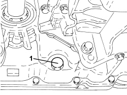
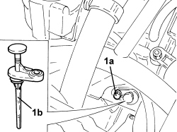
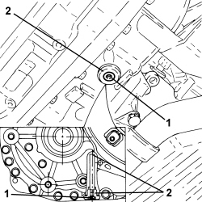
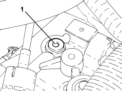

0010T44 CHANGE AUTOMATIC TRANSMISSION FLUIDS
- Path
- Procedures > 00 MAINTENANCE > 0010 NEW VEHICLES AND MAINTENANCE > 0010T VEHICLE FLUIDS > 0010T44 CHANGE AUTOMATIC TRANSMISSION FLUIDS
- Kind
- repair procedure (removal / refitting; the operation number is the code)
- Applies to
- engines: 2.2, 1.9 JTD 16v, 2.4 JTD 20v; all production periods; only with equipment: AUTOMATIC TRANSMISSION
- Interactive page
- https://sloeber94.github.io/elrnDB-fCrm/en/#/194002310
Applies to: engines: 2.2; all production periods
- Position the vehicle on a lift.
Op. 7055B54 UNDER ENGINE PROTECTION/GUARD - R.R.
1. Unscrew the automatic transmission fluid drain plug and allow the oil to drain completely into a suitable container.
- Fit the engine oil drain plug in its housing complete with new O-ring and tighten it to the recommended torque.
Component | Fastening | dia | Value (daNm) | Validity |
|---|---|---|---|---|
Automatic gearbox oil drain plug | - | - | (automatic gearbox side) 4.0 | 2.2 CAE |

Applies to: engines: 2.2; all production periods
1. Undo the bolt (1a) and remove the automatic transmission fluid dipstick (1b).
- Refill the automatic gearbox with the recommended fluid and in the recommended quantity via the opening in the dipstick.
- Place the automatic transmission fluid dipstick in its housing and secure it tightening the bolt to the recommended torque.
Component | Fastening | dia | Value (daNm) | Validity |
|---|---|---|---|---|
Automatic transmission fluid level dipstick | Bolt | - | (automatic gearbox side) 0.6 | 2.2 CAE |

Applies to: engines: 2.2; all production periods
- Check the automatic transmission fluid level working as described below.
- Place the vehicle in a horizontal position.
- Place the gear selector lever from position P to D and then back to P again.
- Start up the engine and let it idle.
- Using the Examiner, check that temperature of the fluid is 70° - 80°C.
1. Undo the bolt (1a) and using the dipstick (1b) check that the level of the automatic transmission fluid is between the hot splinings.
- If necessary, top up with the recommended fluid following the instructions given previously.
- Place the automatic transmission fluid dipstick in its housing and secure it tightening the bolt to the recommended torque.
Component | Fastening | dia | Value (daNm) | Validity |
|---|---|---|---|---|
Automatic transmission fluid level dipstick | Bolt | - | (automatic gearbox side) 0.6 | 2.2 CAE |

Applies to: engines: 2.2; all production periods
Op. 7055B54 UNDER ENGINE PROTECTION/GUARD - R.R.
- Remove the vehicle from the lift.
Applies to: engines: 1.9 JTD 16v; all production periods
- Position the vehicle on a lift.
Op. 7055B54 UNDER ENGINE PROTECTION/GUARD - R.R.
1. Unscrew the automatic transmission fluid level check plug with its o-ring.
2. Unscrew the automatic transmission fluid drain plug with its seal.

Applies to: engines: 1.9 JTD 16v; all production periods
- Retighten the automatic transmission fluid drain plug with its seal to the specified torque.
Component | Fastening | dia | Value (daNm) | Validity |
|---|---|---|---|---|
Automatic gearbox oil drain plug | - | - | (automatic gearbox side) 5.5 | 1.9 JTD 16v CAE 2.4 JTD 20v CAE |
1. Remove the engine coolant supply reservoir from its bracket without disconnecting the pipes.

Applies to: engines: 1.9 JTD 16v; all production periods
1. Unscrew the automatic transmission fluid filler plug and remove.

Applies to: engines: 1.9 JTD 16v; all production periods
- Add 200 g more of the the specified fluid than was removed to the filler opening.
Component | Type | Description | Classification | Qty. | Validity |
|---|---|---|---|---|---|
AUTOMATIC TRANSMISSION (6 speed) - for replacing gearbox from FIAT Parts | Oil | TUTELA GI/VI | - | 2,425 kg | 1.9 JTD 16V CAE 2.4 JTD 20V CAE |
Component | Type | Description | Classification | Qty. | Validity |
|---|---|---|---|---|---|
AUTOMATIC TRANSMISSION (6 speed) - for changing oil at Service Centre | Oil | TUTELA GI/VI | - | 3,320 kg | 1.9 JTD 16V CAE 2.4 JTD 20V CAE |
Component | Type | Description | Classification | Qty. | Validity |
|---|---|---|---|---|---|
AUTOMATIC TRANSMISSION (6 speed) - For total refilling (opening gearbox) | Oil | TUTELA GI/VI | - | 6,110 kg | 1.9 JTD 16V CAE 2.4 JTD 20V CAE |
- Tighten the automatic transmission fluid drain plug to the recommended torque.
Component | Fastening | dia | Value (daNm) | Validity |
|---|---|---|---|---|
Automatic gearbox oil filler plug | - | - | (automatic transmission side) 2.4 ÷ 3.6 | 1.9 JTD 16v CAE 2.4 JTD 20v CAE |
- Check the automatic transmission fluid level as described in:
Op. 0010T45 AUTOMATIC TRANSMISSION FLUID CHECK LEVEL AND TOP UP IF NECESSARY
Applies to: engines: 2.4 JTD 20v; all production periods
- Position the vehicle on a lift.
Op. 7055B54 UNDER ENGINE PROTECTION/GUARD - R.R.
1. Undo the automatic transmission fluid level control plug complete with O ring.
2. Undo the automatic transmission fluid drain plug complete with seal.

Applies to: engines: 2.4 JTD 20v; all production periods
- Retighten the automatic transmission fluid drain plug complete with seal to the recommended torque.
Component | Fastening | dia | Value (daNm) | Validity |
|---|---|---|---|---|
Automatic gearbox oil drain plug | - | - | (automatic gearbox side) 5.5 | 1.9 JTD 16v CAE 2.4 JTD 20v CAE |
1. Remove the engine coolant supply reservoir from the mounting bracket without disconnecting the pipes.

Applies to: engines: 2.4 JTD 20v; all production periods
1. Undo the automatic transmission fluid filler plug and remove it.

Applies to: engines: 2.4 JTD 20v; all production periods
- Introduce 200 g more of the recommended fluid via the filler opening than the amount removed.
Component | Type | Description | Classification | Qty. | Validity |
|---|---|---|---|---|---|
AUTOMATIC TRANSMISSION (6 speed) - for replacing gearbox from FIAT Parts | Oil | TUTELA GI/VI | - | 2,425 kg | 1.9 JTD 16V CAE 2.4 JTD 20V CAE |
Component | Type | Description | Classification | Qty. | Validity |
|---|---|---|---|---|---|
AUTOMATIC TRANSMISSION (6 speed) - for changing oil at Service Centre | Oil | TUTELA GI/VI | - | 3,320 kg | 1.9 JTD 16V CAE 2.4 JTD 20V CAE |
Component | Type | Description | Classification | Qty. | Validity |
|---|---|---|---|---|---|
AUTOMATIC TRANSMISSION (6 speed) - For total refilling (opening gearbox) | Oil | TUTELA GI/VI | - | 6,110 kg | 1.9 JTD 16V CAE 2.4 JTD 20V CAE |
- Retighten the automatic transmission fluid filler plug to the recommended torque.
Component | Fastening | dia | Value (daNm) | Validity |
|---|---|---|---|---|
Automatic gearbox oil filler plug | - | - | (automatic transmission side) 2.4 ÷ 3.6 | 1.9 JTD 16v CAE 2.4 JTD 20v CAE |
- Proceed with checking the level of the automatic transmission fluid as described in:
Op. 0010T45 AUTOMATIC TRANSMISSION FLUID CHECK LEVEL AND TOP UP IF NECESSARY
Topics linked from this page (2)
- 0010T45 AUTOMATIC TRANSMISSION FLUID CHECK LEVEL AND TOP UP IF NECESSARY
- 7055B54 UNDER ENGINE PROTECTION/GUARD - R.R.
Topics that link to this page (6)
- 1004B14 POWER UNIT WITH AUTOMATIC TRANSMISSION R + R
- 1088B20 ENGINE COOLING RADIATOR - R + R
- 2130A27 DELIVERY AND RETURN DUPLEX PIPING OF AUTOMATIC GEARBOX OIL TO COOLING RADIATOR - R R
- 2130B36 AUTOMATIC TRANMISSION VALVE COVER R R
- 2130B40 GEAR SELECTION SOLENOID UNIT - R R
- 2135B58 ELECTRONIC AUTOMATIC TRANSMISSION SYSTEM WIRING - R R